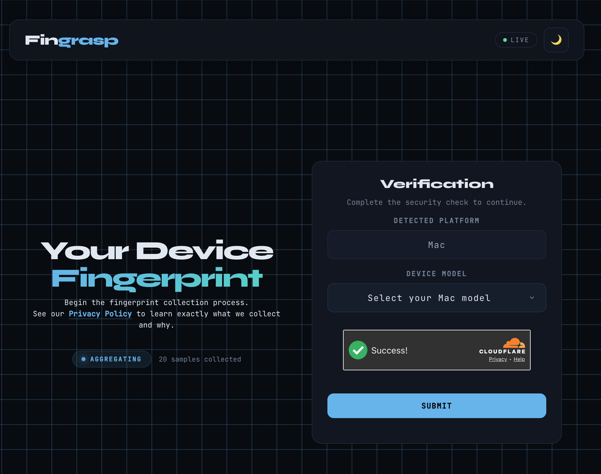
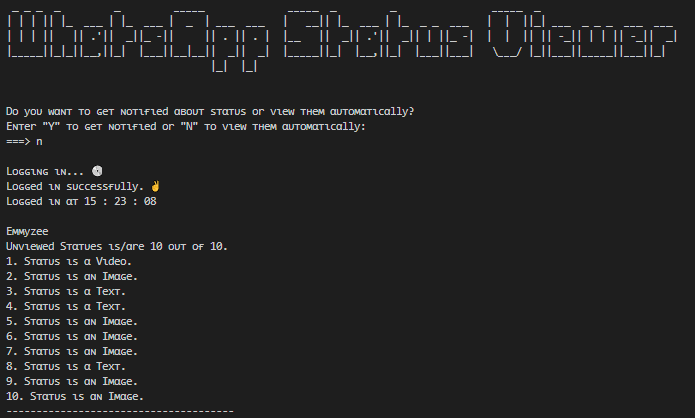
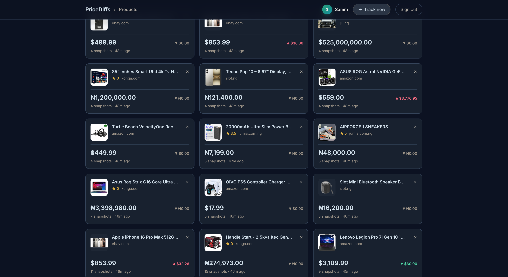
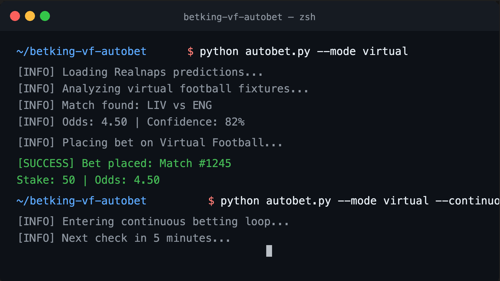
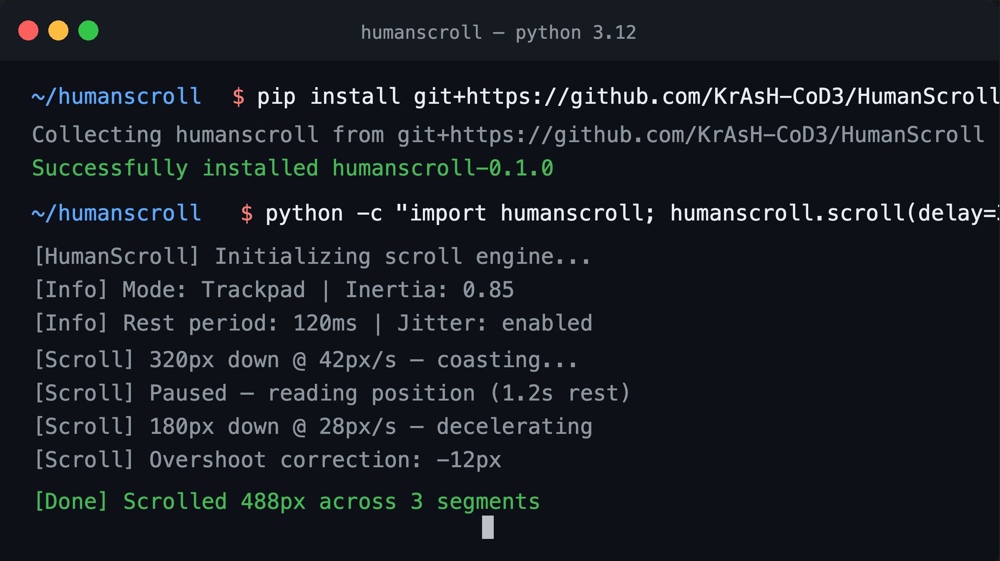
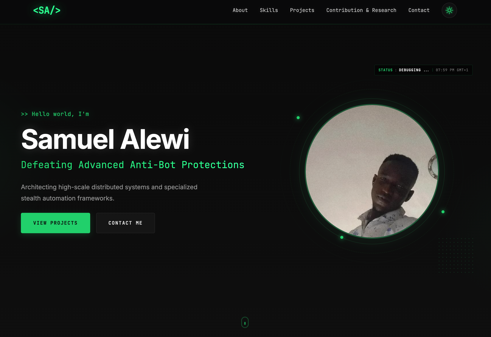
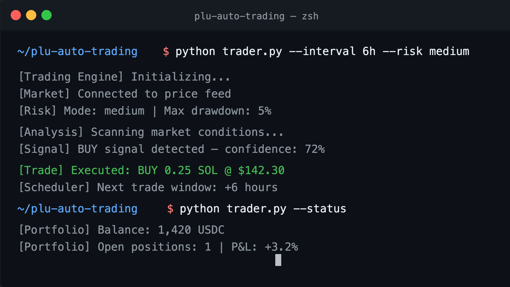

About Me
Samuel Alewi
|
samuel@workbench:~/portfolio$ cat about.md
Architecting high-scale distributed systems and specialized stealth automation frameworks.
focus
- High-concurrency backend architecture
- Browser automation and orchestration
- Device integrity and protocol research
background
As a Backend Architect, I specialize in building Python ecosystems that handle massive concurrency without breaking. My work focuses on creating resilient server-side foundations that power products at scale.
Beyond traditional backend, I engineer Stealth Automation frameworks. I design specialized orchestrators and headless pipelines that bypass advanced anti-bot protections and operate where others are detected.
Leveraging my expertise in automation, I am currently pioneering research into specialized Cybersecurity domains. My focus lies in protocol analysis, anti-telemetry heuristics, and the development of defensive methodologies that bridge the gap between high-scale architecture and system integrity.
Projects
Seven projects I designed and built. Each links to its source on GitHub and, where it is deployed, to a live demo.
samuel@workbench:~/portfolio$ ls -l ./work
-
01Fingrasp

An advanced device-integrity platform engineered to differentiate between legitimate hardware and simulated environments. Focuses on eliminating false positives in browser fingerprinting to ensure high-fidelity authentication.
FastAPI MongoDB Redis -
02WhatsAppStatusViewer

Continuously monitors targeted contact status updates and either immediately sends you a message or at specified time intervals (30m — 6h).
CLI Python Selenium Automation -
03PriceDiffs

Multi-phase e-commerce price tracker with stealth browser scraping, historical snapshots, and a Django + DRF dashboard for monitoring price fluctuations across retailers.
Django DRF Playwright Price Tracking -
04Betking-VF-Autobet

A high-performance automation engine that autonomously executes virtual football bets based on Realnaps predictions. Optimized for continuous real-time stake management.
CLI Python Playwright Betting -
05HumanScroll

Physics-based human-like scrolling library for Playwright automation. Models inertia, overshoot, rest periods, and trackpad vs. mouse scroll patterns with anti-detection features.
Python Playwright Anti-Detection Behavioral Biometrics -
06Portfolio

My personal portfolio — built from scratch with just HTML, CSS, and JavaScript. No frameworks, no libraries. Backend engineers can ship frontends too.
HTML5 CSS3 JavaScript -
07Plu-Auto-Trading

A high-precision trading engine that automatically executes trades at pre-defined intervals for consistent daily growth. Focuses on temporal reliability and automated stake management.
CLI Python Automation Trading
Open Source Contributions
samuel@workbench:~/portfolio$ cat contributions.md
Merged pull requests, upstream commits and reproducible bug reports across 21 external repositories. A selection is below — each card opens that project on GitHub.
open source
The WhatsApp plugin layer for the CamouChat stealth automation framework. Expanded its competitor matrix and hardened the plugin against a JavaScript injection vector, a path traversal flaw and log leakage.
A WebDriver-less Chromium automation library that drives the browser directly over the DevTools Protocol. Authored a merged fix pass covering resource leaks, incorrect runtime behaviour and deprecation warnings, filed from a self-reproduced defect report.
A Python library that simulates realistic human keyboard typing for web automation (Playwright/Selenium), using Markov chains to model errors, corrections and fatigue. Improved error correction and modernized the packaging.
Natural browser control through mouse movement and screen detection. Diagnosed two
packaging defects from a clean install - a wrong Python version floor and a missing
mss dependency - then landed the merged fix.
A Python wrapper for the free CallMeBot WhatsApp messaging API, with session
management and environment-based configuration. Modernized the interface with a new
send_message function.
A stealth plugin for Playwright that patches the most common automation leaks. Rewrote the README for clearer setup and usage.
research
Get in Touch
samuel@workbench:~/portfolio$ cat contact.md
Open for architectural consulting and high-scale backend engineering roles.
© 2026 Samuel Alewi · # KrAsH-CoD3